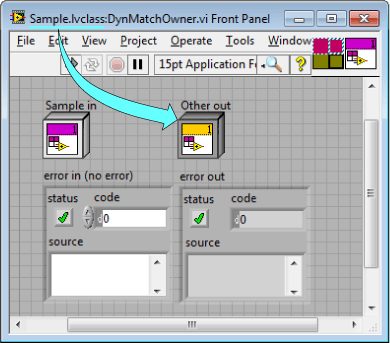

This LabVIEW class control or indicator is assigned to the connector pane of the VI and dynamic. All dynamic terminals must be of the same data type as the class that owns the VI. This control or indicator is of a different type.
To correct this error, you must either remove the dynamic dispatch setting or replace this control or indicator with another that is the type of the owning class.